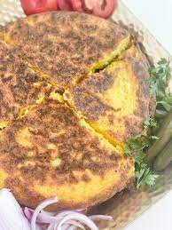
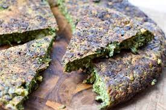

List of Persian food
Gheymeh

Gheymeh is a popular traditional dish in Iran. It serves with rice usually or you can substitude the rice with bread
Ingredients
- Onion: 2 large
- Red meat: 1 lb
- Cotyledons: 0.5 lb
- Tomato paste: 2 Tbsp
- Water: 2 cups
- Oil: 5 Tbsp
- Spices: tumeric, black pepper, cinemon, salt
Steps
- Chop the onions and fry them in a pot with oil
- Add the spices to the pot once onions are fried
- Add the red meat to the pot and stir it for 5 minutes
- add the Cotyledons and water to the pot and let it boil for 1.5 on meduim heat
- fry your tomato paste for 2 minutes with oil and add to the pot
What makes it better
One thing that makes this food super delicous is french fires. If you like to add as a side for Ghemyeh, that would make this food complete.
Potato Kotlet

Gheymeh is a popular traditional dish in Iran. It serves with rice usually or you can substitude the rice with bread
Ingredients
- Onion: 1 Meduim
- potato: 3 meduim
- eggs: 3 large
- Oil: 5 Tbsp
- Spices: tumeric, black pepper, garlic powder, salt
Steps
- shred you onion and squeeze the juice out of it and add the rest to a bowl
- shred your potato into the bowl
- crack the eggs in the bowl and add all the spices
- Mix all the ingredients well.
- heat up the pan and add your oil. add the batter to the pan make the surface smooth. put the lid on and let it cook for 10 minutes.
- then flip the kotlet and let the other side fried for 7 minutes
What makes it better
Potato kotlet is really good with yogurt, ketchup, and pickles.
Herbs Kotlet

Gheymeh is a popular traditional dish in Iran. It serves with rice usually or you can substitude the rice with bread
Ingredients
- Onion: 1 Meduim
- chopped herbs: 0.75 lb
- eggs: 3 large
- Oil: 5 Tbsp
- chopped walnuts: 3 Tbsp
- Spices: tumeric, black pepper, garlic powder, salt
Steps
- Add the chopped herbs into a bowl and add the spices and chooped walnuts
- crack the eggs inside the bowl and mix everything together
- heat up the pan and add your oil. Add the batter to the pan make the surface smooth. Put the lid on and let it cook for 10 minutes.
- then flip the kotlet and let the other side fried for 7 minutes
What makes it better
Herb kotlet is really good with Mayo, Yogurt, and Feta cheese